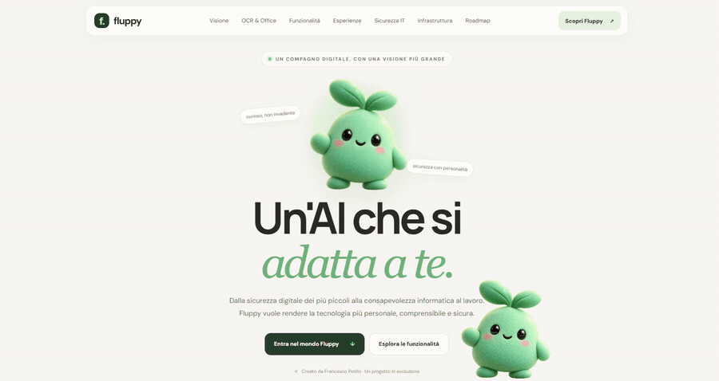
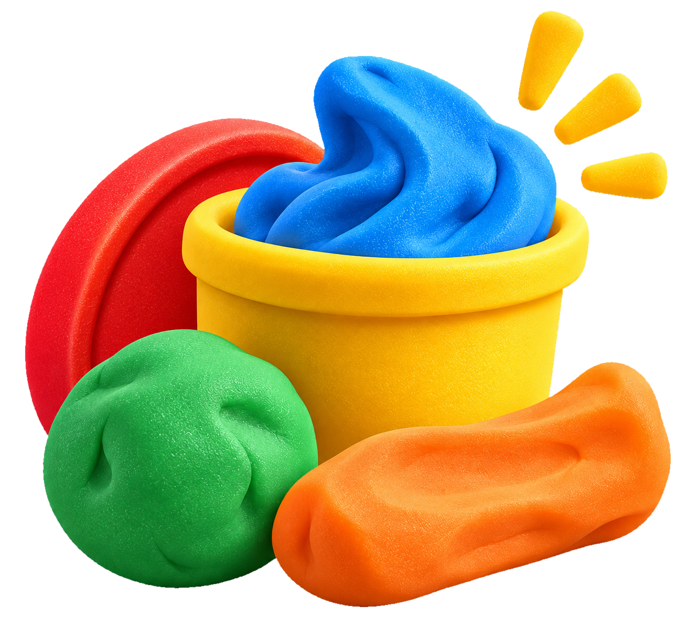

ExcelLegge tabelle ed estrae dati
PRODOTTOQ.TÀPREZZOMonitor2€150Tastiera5€20Totale7€400
Fluppy: vuoi estrarre questa tabella?
Comprendere formule, leggere tabelle e organizzare dati.


Dalla sicurezza digitale dei più piccoli alla consapevolezza informatica al lavoro. Fluppy vuole rendere la tecnologia più personale, comprensibile e sicura.
✳Creato da Francesco Petillo · Un progetto in evoluzione
Fluppy vive sul desktop come una piccola presenza amichevole: reagisce, avvisa e accompagna. Questa è una registrazione reale del prototipo.

Fluppy usa l'OCR per leggere il testo, le tabelle e le informazioni che appaiono sullo schermo. Così può aiutarti in Excel, Word, PDF, email e browser senza dipendere da un connettore cloud per ogni applicazione.

Testi, tabelle, finestre e informazioni visibili, anche in applicazioni diverse.
Può spiegare un errore, riassumere un documento o aiutarti a trasferire dati tra strumenti.
L'obiettivo è ridurre i passaggi manuali e rendere più semplice il lavoro quotidiano.
Esempi visivi simulati per illustrare come Fluppy potrebbe assisterti nelle applicazioni che già usi.
Comprendere formule, leggere tabelle e organizzare dati.
Riassumere documenti, migliorare testi e creare bozze.
Individuare informazioni, date, importi e passaggi importanti.
Riassumere email, comprendere pagine e orientarsi online.
Le schermate in questa sezione sono mockup illustrativi, non screenshot di applicazioni già integrate. OCR, accesso allo schermo, azioni e modalità di elaborazione disponibili dipenderanno dall'implementazione finale e dai permessi concessi.
Ti aiuto a prestare attenzione alle cose importanti.
 CONSAPEVOLEZZAUn download alla volta.
CONSAPEVOLEZZAUn download alla volta.
Controlla sempre la provenienza prima di aprire un file.
Suggerimento di sicurezza AI RESPONSABILEPrima di condividere…
AI RESPONSABILEPrima di condividere…
Evita password e informazioni riservate negli strumenti AI.
Buona praticaUn'anteprima concettuale dell'esperienza Fluppy — non una schermata dell'applicazione reale.
Un bambino, una persona a casa e un dipendente vivono contesti diversi. Fluppy nasce dall'idea che anche l'assistente debba cambiare insieme a loro.

Un'esperienza pensata per accompagnare i bambini e aiutare i genitori a impostare limiti e protezioni adatti all'età.
Visione futuraAvvisi sui download, suggerimenti di sicurezza, guida all'uso responsabile dell'AI e interazioni con la mascotte.
Funzioni già presenti e in evoluzione
Una configurazione professionale con policy, permessi e attenzione ai dati aziendali, costruita per integrarsi con i processi IT.
Visione futuraFluppy combina una presenza amichevole sul desktop con piccoli interventi contestuali. Le capacità vengono sviluppate passo dopo passo.
Monitora la cartella Download e segnala alcuni file che meritano attenzione. È un livello aggiuntivo di consapevolezza, non un antivirus completo né una garanzia che un file sia sicuro.
La mascotte può attirare l'attenzione su eventi selezionati e mostrare messaggi in modo più comprensibile e meno impersonale.
Rilevamento di alcune attività di gioco supportate e promemoria giocosi. L'obiettivo è aiutare a prendere consapevolezza, non sorvegliare o punire l'utente.
Promemoria per proteggere password, dati personali e informazioni riservate quando si usano strumenti di intelligenza artificiale supportati.

Profili, permessi, tono e livello di intervento configurabili per adattare Fluppy alla persona e al contesto.
Fluppy immagina esperienze diverse per famiglie, uso quotidiano e aziende. Le funzionalità future sono presentate come obiettivi di progetto, non come strumenti già disponibili.

Aiuta i bambini a riconoscere link sospetti, truffe e richieste di informazioni personali.
Piccole missioni per imparare a usare il computer e sviluppare buone abitudini digitali.
Promemoria per pause, studio e routine equilibrate, con regole concordate in famiglia.
Impostazioni e protezioni configurabili dai genitori in base all'età e alle esigenze del bambino.
Fluppy punta a collegare gli strumenti di sicurezza già presenti in casa o in azienda e trasformare gli alert tecnici in avvisi chiari, direttamente sul PC dell'utente.
Nel progetto DOTTY, da cui nasce FLUPPY, è prevista una collaborazione con Microsoft Defender per richiedere scansioni di file sospetti. Fluppy può rendere più comprensibili i segnali di rischio e invitare l'utente a prestare attenzione, senza sostituire l'antivirus.
Funzioni da verificare nella versione corrente

La visione è integrare fonti di telemetria e piattaforme di sicurezza — SIEM, IDS/IPS e strumenti endpoint — per portare gli avvisi rilevanti fino alla persona interessata, prima che debba accorgersene da sola o aprire una richiesta al supporto.
Le piattaforme mostrate sono esempi di ecosistemi compatibili o di interesse, non una dichiarazione di integrazioni già attive. Ogni collegamento richiede connettori, autorizzazioni e verifiche specifiche; la disponibilità dipenderà dallo sviluppo del progetto e dalle API dei fornitori.
La privacy non dovrebbe essere una scelta tra comodità e controllo. La visione di Fluppy prevede due modalità di distribuzione, pensate per esigenze diverse.
Un servizio AI ospitato su infrastruttura in Italia.
AI eseguita nell'infrastruttura controllata dall'azienda.
La localizzazione dei server non garantisce da sola la conformità normativa; anche fornitori, telemetria, backup, conservazione e accessi devono essere progettati correttamente. Le modalità descritte sono obiettivi architetturali, non servizi dichiarati già operativi.
Il comportamento dell'AI, gli strumenti che può utilizzare e i permessi del sistema operativo sono livelli distinti. Fluppy vuole offrire personalizzazione mantenendo confini chiari.
Guarda la roadmap↗Fluppy è un progetto in evoluzione. Separiamo ciò che esiste da ciò che vogliamo costruire, così la visione resta ambiziosa ma trasparente.
Mascotte interattiva, avvisi selezionati, monitoraggio dei download e guida contestuale.
In evoluzioneImpostazioni dedicate, animazioni, profili e controllo più chiaro delle preferenze.
PianificatoProfili famiglia e azienda, controlli web più avanzati e distribuzione privata per le organizzazioni.
Da progettareFluppy esplora l'incontro tra intelligenza artificiale, interazione desktop, consapevolezza cybersecurity e controllo dei dati. Un progetto personale costruito un passo alla volta.
Questo è solo l'inizio del viaggio di Fluppy.
Torna all'inizio↑